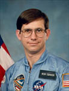

Lyndon B. Johnson Space Center
Houston, Texas 77058
|
National Aeronautics and Space Administration Lyndon B. Johnson Space Center Houston, Texas 77058 |
 |
Biographical Data |
||
ROBERT J. CENKER
AEROSPACE SYSTEMS CONSULTANT
Mr. Cenker currently consults with various firms in the areas of spacecraft design, assembly, and flight operations, and micro-gravity research. This has included launch vehicle evaluation and systems engineering support for Motorola on Iridium; avionics architecture, generation of performance specification, and generation of performance map for small expendable launch vehicle; and constellation configuration and launch vehicle performance definition for proprietary smallsat communications system. Last two years with RCA were spent as Manager of Payload Accommodations on EOS Platform. Prior assignments at RCA included Integration and Test Manager for the Satcom D & E spacecraft, responsible for implementation of all launch site activities, and Spacecraft Bus Manager on the Spacenet/Gstar programs, responsible for satisfaction of multiple launch vehicle interfaces (Delta, STS and Ariane) by the spacecraft bus design. Other efforts include systems engineering and operations support for INTELSAT on Intelsat K and Intelsat VIII; AT&T on Telstar 401 and 402; Fairchild Matra on SPAS III; and Martin Marietta on Astra 1B, BS3N, ACTS, and Series 7000 communications satellites. Systems engineering and architecture for various spacecraft studies, ranging from individual Smallsats, military communications constellations, and large, assembled-in-orbit platforms.
Former member of the technical staff at the RCA/GE Astro Space Division. In 18 years with GE (formerly RCA) he worked in a variety of functions, including satellite attitude control and in-orbit operations; spacecraft assembly, test, and pre-launch operations; and satellite hardware and system design. Approximately two years of this experience were with a Navy navigation satellite program, with the remaining time spent on various commercial communications satellite efforts.
Selected by RCA as a Payload Specialist; and approved by NASA to fly on the space shuttle Columbia on Space Shuttle Mission 61-C. During the six day mission, (January 12 to 18, 1986) he performed a variety of physiological tests, observed the deployment of the RCA Satcom Ku-1 satellite, and operated primary experiment, an infrared imaging camera. In completing this flight, Mr. Cenker traveled over 2.1 million miles in 96 Earth orbits and logged over 146 hours in space.
Born November 5, 1948 and raised near Uniontown, Pennsylvania. Mr. Cenker holds Bachelor's and Master's degrees in Aerospace Engineering from Penn State; and a Master's degree in Electrical Engineering from Rutgers. He is an Associate Fellow in the AIAA, a Senior Member of the IEEE, a Life Member of the Penn State Alumni Association, a member of the Association of Space Explorers, and a registered Professional Engineer in the state of New Jersey. He is also a member of Tau Beta Pi and Sigma Gamma Tau.
Married to Barbara Ann Cenker. They have two sons and one daughter.
MAY 1999
This is the only version available from NASA. Updates must be sought direct from the above named individual
{kind=link}